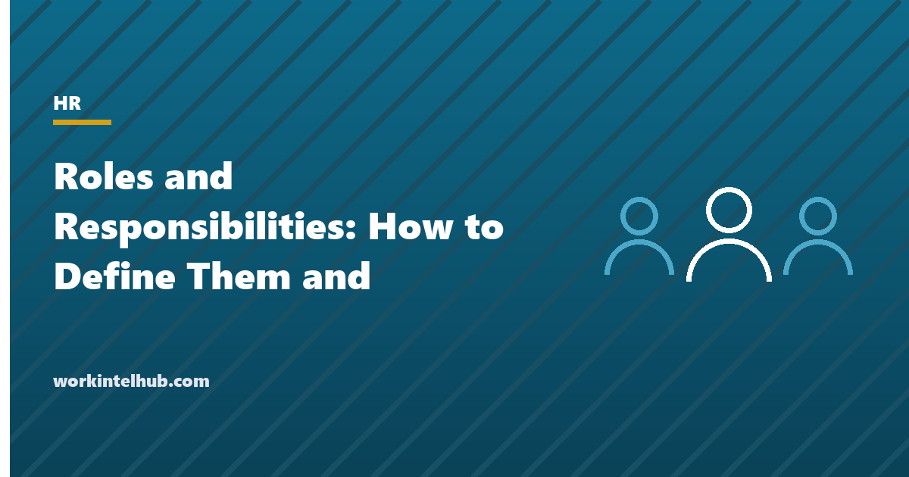

Roles and Responsibilities: How to Define Them and Templates

Most work that falls through the cracks does so because two people each thought the other owned it, or because nobody did and everyone assumed someone did. Defining roles and responsibilities is the fix, and it is less about job descriptions than about decisions: for every responsibility that matters, who does it, who is accountable for it, who must be consulted and who is told. Written down, the gaps and the overlaps appear immediately; left in people's heads, they appear in the post-mortem.
This guide sets out a method for defining roles in a team or a project, the difference between a role and a job, and the two documents that do most of the work: a responsibility matrix (RACI) and a one-page role charter per role. The templates include both, a team roles register and a gap-and-overlap check. The job description template covers the hiring document; this page covers how work is actually divided.
Download the templates
Free files: Word, Excel and PDF
Three files, free, no email required. Word to edit, Excel to track, PDF to print or share.
Templates open in Microsoft Word, Excel, Google Docs and Sheets, LibreOffice and any PDF reader. Free to use and adapt for your organisation.
A method that takes an afternoon
- List the responsibilities, not the people. Twenty to forty things the team must do or decide, as outcomes: "approve supplier invoices", "own the release calendar", "answer customer escalations".
- Put roles across the top, not names; names change.
- Fill the matrix in the room, with the people who hold the roles. The arguments are the point.
- Exactly one A per row. Shared accountability is nobody's; the sheet flags rows with none or more than one.
- Resolve gaps and overlaps before leaving: assign the orphan responsibilities, split or merge the doubles.
- Write a role charter for each role from its column, including what it is not responsible for.
- Review quarterly and whenever someone joins or leaves.
RACI, explained briefly
| Letter | Means | How many per row | Common mistake |
|---|---|---|---|
| R, responsible | Does the work | One or more | Everyone is R, so nobody is |
| A, accountable | Answers for the outcome; approves | Exactly one | Two As, or an A who is not senior enough to decide |
| C, consulted | Gives input before, two-way | As few as possible | Consulting everyone, so nothing is decided |
| I, informed | Told after, one-way | As needed | Confusing informed with consulted, so decisions wait for people who had no say |
The role charter: one page per role
The matrix shows how responsibilities are distributed; the charter is what each person carries. Purpose in one sentence; five to eight key responsibilities as outcomes; the decisions the role makes alone and those it recommends; measures of success; and, the section most templates omit, what the role is not responsible for. That last section prevents the slow accretion of duties that turns every senior role into a bottleneck and every junior role into a dumping ground. The team charter is the equivalent at team level, and the span of control entry explains why a manager's charter should list fewer Rs than their team's.
Roles are not jobs. A job is the position a person is hired into; a role is a bundle of responsibilities that may be held by one person, shared, or held by one person alongside another role. Projects assign roles (sponsor, lead, approver) to people who keep their jobs; the project plan includes a RACI for that reason.
Signs the roles need redefining
- The same two people keep both doing something, or both not doing it.
- Decisions wait for a meeting because nobody is sure who can make them.
- A manager's RACI column is mostly A and R; they are a bottleneck.
- New starters ask who owns something and get three answers.
- The one-on-one keeps returning to "is that mine?"; the performance review cannot find the measures.
Key takeaways
- Define responsibilities before roles, roles before names, and fill the matrix with the people in the room.
- Exactly one accountable person per responsibility; the sheet flags gaps and overlaps.
- Write a one-page charter per role, including what it is not responsible for.
- Review quarterly and at every join or leave.
Frequently asked questions
What is the difference between a role and a responsibility?
A responsibility is a single outcome someone must deliver or a decision someone must make. A role is a named bundle of responsibilities, such as team lead or release manager, which may be held by one person, shared, or held alongside another role. Jobs are positions people are hired into; roles are how work is divided within them.
What is a RACI matrix?
A table of responsibilities against roles, with each cell marked R (responsible, does the work), A (accountable, answers for it, exactly one per row), C (consulted before) or I (informed after). It exposes responsibilities with no owner and those with several, which are the two causes of dropped work.
How many responsibilities should a role have?
Five to eight key responsibilities on a charter, written as outcomes. More than that is a job description; fewer suggests the role is part of another. The RACI can carry more rows because it covers the whole team.
Who should define roles and responsibilities?
The manager facilitates, but the people who hold the roles fill the matrix together. Roles defined by a manager alone are accepted politely and ignored; roles argued out in the room are used.
How often should roles and responsibilities be reviewed?
Quarterly, and whenever someone joins, leaves or changes role. Most drift happens at those moments, when a departing person's responsibilities are absorbed informally and never reassigned.